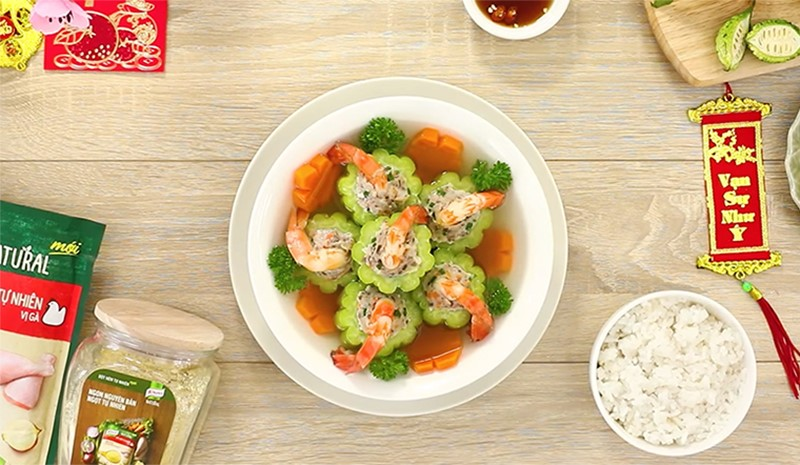
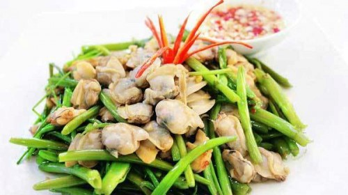
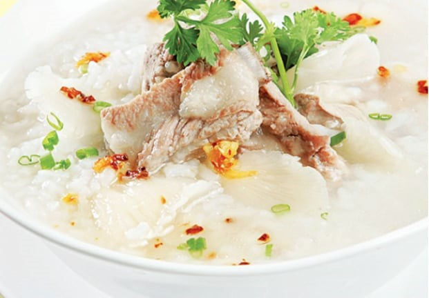
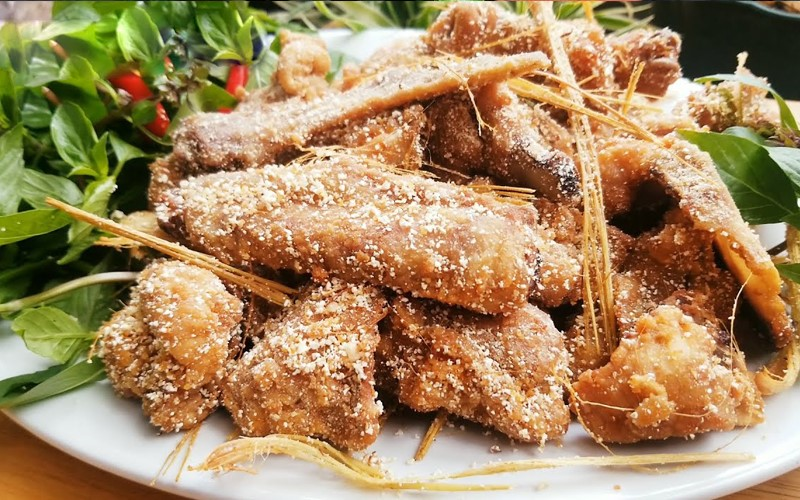
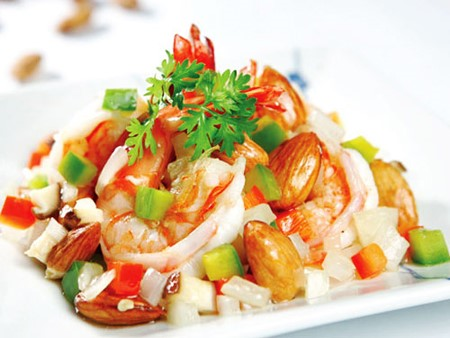
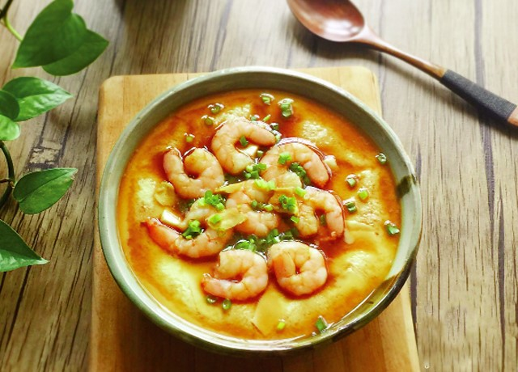
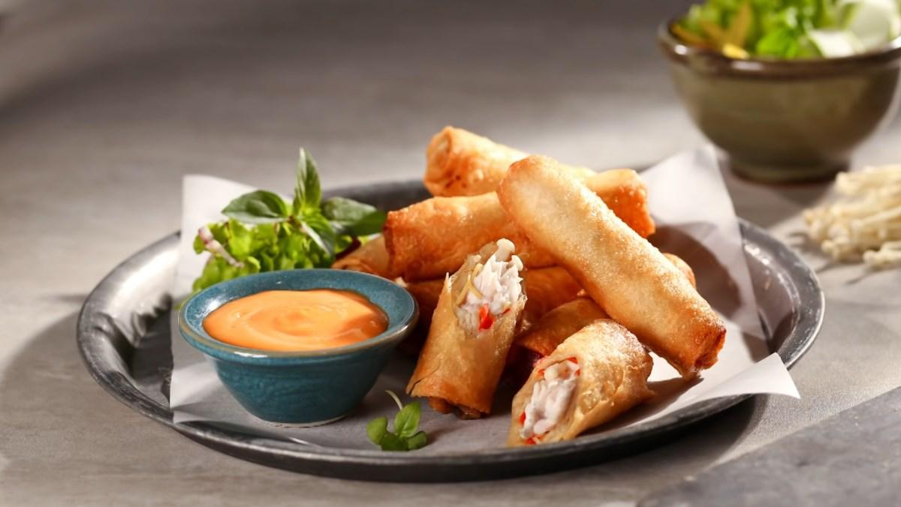
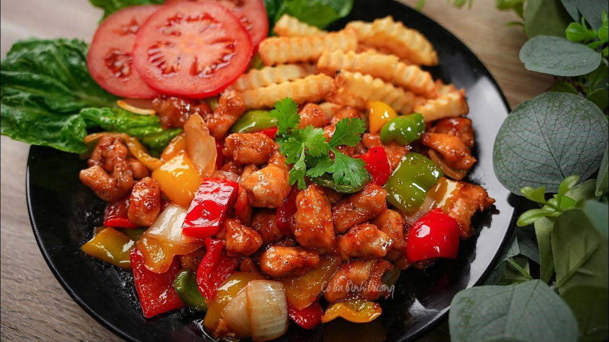
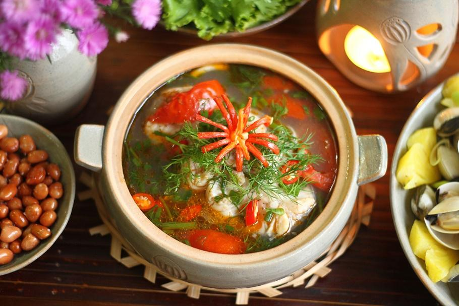
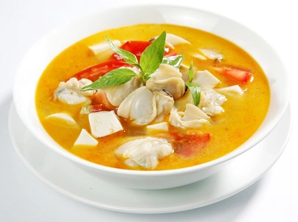

“Canh khổ qua nhồi hải sản” là món canh vừa có vị đắng của khổ qua vừa có vị ngọt từ hải sản, ăn rất mát, ngon và đặc biệt lạ miệng.
Chuẩn bị: 20 phút
Thực hiện: 30 phút
Khẩu phần: 4 người
Nguyên Liệu
• 4 trái khổ qua (mướp đắng).
• 100g cá thác lác
• 200g mực làm sạch, để ráo xay nhuyễn
• 200g tôm, bóc vỏ, bỏ chỉ đen, chà muối rửa sạch, lau khô xay nhuyễn
• 1 lít nước dùng
• Hành ngò
• Hạt nêm Knorr từ Nấm và Rong Biển, Nước mắm chấm Knorr, tiêu, dầu ăn
Cách nấu
• Cá thác lác, tôm, mực, trộn chung, quết dẻo với đầu hành trắng, cho 1 muỗng Hạt nêm Knorr từ Nấm và Rong Biển, 1⁄2 muỗng tiêu, 1 muỗng đường, 1 muỗng Nước mắm chấm Knorr trộn đều.
• Khổ qua, cắt khúc, bỏ ruột, chần sơ qua nước sôi, ngâm vào nước đá cho xanh, vớt ra để ráo, dùng muỗng nhỏ, múc hải sản nhồi vào khổ qua, thoa 1 ít dầu cho láng mặt.
• Đun nước dùng vừa sôi, thả khổ qua vào hầm, nêm 1 muỗng hạt nêm, 1 muỗng đường, nếm vừa ăn, hầm cho đến khi khổ qua chín mềm.
• Múc từng khúc khổ qua ra tô, rồi múc nước canh đổ vào, rắc ít tiêu, hành ngò. Món khổ qua nhồi hải sản ăn với cơm trắng và Nước mắm chấm Knorr kèm ớt xắt lát.
Món ăn không chỉ thể hiện được sự khéo léo của người nấu mà còn cuốn hút người ăn nhờ màu sắc rực rỡ, tươi sáng và mùi vị rất đặc biệt. Cái sần sật của da heo, vị bùi bùi từ tôm, mực càng thú vị hơn khi được kết hợp cùng nhiều loại rau, củ đi kèm.
Thực hiện: 15 phút
Khẩu phần: 2 người
Nguyên Liệu
• 200g rau muống
• 300g ngao
• 60g tỏi
• 2 thìa súp dầu ăn
• 1 ít bột bắp pha loãng
• 3 thìa cà phê Hạt nêm Knorr từ Nấm và Rong Biển, 1 thìa cà phê Nước mắm chấm Knorr
Cách nấu
• Ngao ngâm nước gạo trong 2 giờ cho sạch cát, lấy ra cho vào nồi hấp chín, gỡ lấy thịt ngao, ướp với Nước mắm chấm Knorr, 1 thìa cà phê Hạt nêm Knorr từ Nấm và Rong Biển, để thấm 10 phút.
• Rau muống lặt bớt lá và cuống, rửa sạch, chần sơ, vớt ra cho vào nước lạnh, lấy ra ngay cho rau có màu xanh ngon. Tỏi bóc vỏ băm nhuyễn.
• Làm nóng dầu ăn, cho tỏi băm vào phi thơm, cho rau muống và ngao vào đảo đều, nêm Hạt nêm Knorr từ Nấm và Rong Biển vừa ăn, xào nhanh tay cho rau chín, tắt bếp.
Buổi sáng tiết trời se lạnh, được thưởng thức một bát cháo thơm ngon, nóng hổi với vị béo của sườn và vị ngọt của nấm sẽ giúp bổ sung dinh dưỡng cho một ngày làm việc mới đầy năng động.
Chuẩn bị: 20 phút
Thực hiện: 60 phút
Khẩu phần: 4 người
Nguyên Liệu
• 300g sườn non
• 200g gạo thơm
• 200g nấm bào ngư
• 1 cây sả
• 2 thìa cà phê tỏi băm
• 3 nhánh hành lá, 3 cây ngò rí
• 3 lít nước
• 1 thìa súp Hạt nêm Knorr
• 1 thìa súp Nước mắm chấm Knorr
• 1/2 thìa cà phê tiêu xay
• 3 thìa súp dầu ăn
Cách nấu
• Gạo thơm vo sạch. Nấm bào ngư cắt chân, rửa sạch. Sả đập dập, cắt khúc.
• Sườn non chặt miếng vừa ăn, luộc sơ, rửa sạch bằng nước lạnh, cho vào nồi với sả, chế nước vào ngập sườn, nấu 30 phút (khi nấu để lửa nhỏ và vớt bớt bọt).
• Tiếp theo, cho thêm gạo, nấm bào ngư vào nồi nấu lửa nhỏ 30 phút thành cháo, nêm với Hạt nêm Knorr, Nước mắm chấm Knorr.
• Đun nóng dầu ăn, cho tỏi vào phi vàng thơm.
• Múc cháo vào tô, chế vào ít dầu tỏi, rắc tiêu xay, hành lá và ngò rí cắt nhỏ vào. Dùng nóng với Nước mắm chấm Knorr và ớt.
Thịt vịt không chỉ quay ăn với bánh mì, mà nay bạn còn có thể rang muối để ăn cùng cơm nóng tạo sự mới lạ cho bữa cơm gia đình.
Chuẩn bị: 15 phút
Thực hiện: 20 phút
Khẩu phần: 4 người
Nguyên Liệu
• 1,2kg thịt vịt
• 1 trái lê, ép lấy nước
• 1 củ hành tím, băm nhỏ
• 1 thìa súp sả băm
• 1 thìa súp muối, 1 thìa cà phê tiêu, 1⁄2 thìa súp Hạt nêm Knorr từ Thịt Thăn, Xương Ống và Tủy, dầu để chiên
Cách nấu
• Thịt vịt làm sạch, xát rượu và gừng để khử mùi hôi, chặt miếng vừa ăn. Ướp vịt với Hạt nêm Knorr, tiêu, để thấm khoảng 15 phút, cho nước ép lê vào ướp thêm 5 phút.
• Bắc chảo dầu nóng, cho thịt vịt vào chiên ngập dầu, để lửa nhỏ.
• Khi thịt dần chuyển sang màu vàng, thả 1 phần sả và hành tím vào, chiên tiếp cho thịt vàng, vớt ra để ráo dầu.
• Lấy chảo khác, cho ít dầu vào phi thơm sả băm, nhắc xuống.
• Làm nóng lại chảo dầu đã chiên vịt, nhúng vịt trở lại lần 2 để vịt khô và se giòn, vớt ra để ráo. Vẩy muối và tiêu vào thịt vịt đã chiên cho muối bám đều thịt. Cho thịt vào chảo dầu phi sả, lắc đều trên lửa nhỏ khoảng 5 phút, cho ra đĩa.
“Tôm xào hạnh nhân”là một món ăn tuyệt vời với vị thơm ngọt của tôm tươi hòa quyện với hạnh nhân rang chín, rất thích hợp trong những ngày gia đình hội tụ.
Chuẩn bị: 15 phút
Thực hiện: 20 phút
Khẩu phần: 4 người
Nguyên Liệu
• 300g tôm sú (khoảng 12 con)
• 50g hạnh nhân
• 50g ớt xanh
• 50g ớt đỏ
• 50g nấm đông cô
• 1/4 củ hành tây
• 2 thìa cà phê Hạt nêm Knorr từ Nấm và Rong Biển, 1 thìa cà phê đường, 1/2 thìa cà phê Nước mắm chấm Knorr, 1 thìa súp dầu ăn
Cách nấu
• Tôm bóc vỏ, chừa đuôi. Ướp tôm với 1 thìa cà phê Hạt nêm Knorr từ Nấm và Rong biển
• Hạnh nhân rang chín, để nguyên hạt.
• Ớt xanh, ớt đỏ bỏ hạt, rửa sạch. Nấm đông cô ngâm mềm, cắt bỏ chân. Hành tây lột vỏ. Tất cả cắt hạt lựu.
• Làm nóng dầu, xào thơm 1⁄2 lượng hành tây, cho tôm vào đảo đều, để lửa lớn. Cho tiếp nấm đông cô vào, nêm đường, nước mắm chấm Knorr, Hạt nêm Knorr từ Nấm và Rong biển vừa ăn. Tôm chín cho ớt, hành tây còn lại và hạnh nhân vào, đảo nhanh tay.
• Múc ra đĩa, dùng với cơm trắng rất ngon.
Màu vàng óng của trứng gà ta cùng với màu hồng của những con tôm nõn sẽ tạo sự hấp dẫn, ngon lành và lại rất thích hợp cho bữa cơm chiều muộn vội vã của bạn sau một ngày làm việc mệt mỏi
Chuẩn bị: 15 phút
Thực hiện: 15 phút
Khẩu phần: 4 người
Nguyên Liệu
• 150g tôm sú
• 5 quả trứng gà
• 1 trứng vịt bắc thảo
• 30g nấm bào ngư
• 1/2 trái ớt sừng, 1 nhánh hành lá, 1 nhánh ngò rí, 1 thìa cà phê
• Hạt nêm Knorr, 1 thìa cà phê muối, 1/4 thìa cà phê tiêu xay, 1/4 thìa súp bột bắp; nước tương pha tương ớt, dưa leo, cà chua, xà lách ăn kèm
Cách nấu
• Tôm sú rửa sạch, lột vỏ, bỏ chỉ lưng, luộc sơ trong nước có cho ít muối cho tôm vừa chín tới.
• Trứng gà đánh tan với 1/2 thìa cà phê Hạt nêm Knorr, tiêu xay và bột bắp pha với ít nước để tạo độ kết dính. Trứng vịt bắc thảo bóc vỏ, cắt nhỏ.
• Nấm bào ngư rửa sạch, xé nhỏ. Ớt sừng bỏ hạt, cắt sợi. Hành lá, ngò rí cắt nhỏ.
• Đặt tôm sú, nấm bào ngư và trứng bắc thảo vào chén, cho hỗn hợp trứng gà vào, mang hấp khoảng 15 phút. Khi thấy mặt trứng se lại, dùng tăm xăm vào, nếu không thấy sủi nước là trứng chín.
• Lấy trứng ra, trang trí thêm ớt, hành lá, ngò rí, dùng với cơm trắng, ăn kèm dưa leo, xà lách, cà chua, chấm nước tương pha tương ớt rất ngon.
Với dân miền Tây Nam bộ, con cá lóc nướng trui, nấu canh chua, nấu cháo... quá đỗi bình thường. Để thay đổi khẩu vị, món “Chả giò cá lóc” đã được kỳ công biến tấu.
Chuẩn bị: 15 phút
Thực hiện: 25 phút
Khẩu phần: 4 người
Nguyên Liệu
• 1 con cá lóc (khoảng 800g đến 1kg)
• 100g giò sống
• 2 quả trứng vịt bắc thảo
• 2 quả trứng gà
• 2 tai nấm mèo
• 20g hành tím phi vàng
• 100g đồ chua (kiệu+ dưa chuột + củ sen)
• Gia vị: 50g bột mì khô, 100g bột chiên xù màu vàng, 1,5 thìa cà phê Hạt nêm Knorr từ Thịt Thăn và Xương Ống, 1 thìa cà phê tiêu sọ trắng giã nát, 1 thìa súp tương ớt, 1 thìa súp xốt mayonnaise, 1 lít dầu ăn
Cách nấu
• Cá lóc làm sạch, thân cá lấy phần nạc 2 bên sau đó lạng thành từng miếng mỏng (thay bánh tráng) cho đến hết, để lại phần thịt vụn cá
• Trứng vịt bắc thảo luộc chín, băm nhỏ. Trứng gà lấy lòng đỏ
• Nấm mèo ngâm nước ấm, thái chỉ
• Trộn đều giò sống + vịt bắc thảo + nấm mèo + hành tìm phi + thịt vụn cá + hạt nêm Knorr từ Thịt thăn và Xương ống + tiêu sọ, quết dẻo để làm nhân
• Trải từng miếng cá ra, cho nhân vào, cuốn lại như cuốn chả giò. Lăn chả giò qua bột mì khô, nhúng vào lòng đỏ trứng, cho tiếp vào bột chiên xù, cho vào chảo nóng (với nhiều dầu) chiên chín vàng giòn, vớt ra để ráo dầu
• Phần đầu cá và đuôi chiên chín
• Dọn ra đĩa, ăn kèm với đồ chua, chấm xốt mayonaisse và tương ớt.
Vị ngọt của thịt gà hòa quyện với vị chua ngọt thanh thanh của nước cốt me rất hợp với tiết trời se lạnh. Món “Gà lúc lắc xốt me” cực kỳ dễ làm và hấp dẫn, dùng với cơm nóng rất ngon.
Chuẩn bị: 20 phút
Thực hiện: 50 phút
Khẩu phần: 4 người
Nguyên Liệu
• 700g ức gà
• 1 vắt me
• 1 thìa cà phê hành tỏi băm
• 1 thìa cà phê ớt bột
• 1 thìa cà phê bột năng
• 1 ít hành lá, ngò rí
• 1 thìa súp Hạt nêm Knorr
• 2 thìa súp dầu ăn
Cách nấu
• Ức gà rửa sạch với nước muối loãng, chặt miếng vuông vừa ăn, để ráo nước.
• Me cho nước ấm vào giằm lấy 4 thìa súp nước cốt. Bột năng hòa tan với ít nước.
• Quậy đều hỗn hợp nước me, hành tỏi băm, ớt bột, Hạt nêm Knorr, sau đó cho thịt gà vào ướp 10 phút, cho nước bột năng vào trộn đều.
• Đun nóng dầu ăn, cho gà đã ướp vào đảo đều đến khi gà chín và hỗn hợp sánh lại thành xốt là được, tắt bếp.
Riêu cá miền Bắc thường có vị ngọt tự nhiên của cá và mùi thơm đặc trưng của thì là, có thể ăn cùng với cơm hoặc bún tùy thích.
Chuẩn bị: 10 phút
Thực hiện: 10 phút
Khẩu phần: 4-5 người
Nguyên Liệu
• 500g cá chép, rửa sạch, cắt khúc
• 2 quả cà chua, rửa sạch, cắt múi cau
• 1 miếng dứa, gọt vỏ, bỏ mắt, rửa sạch, cắt miếng vừa ăn
• Hành củ, rửa sạch, băm nhuyễn
• Thì là, rửa sạch, cắt khúc
• Hành lá, rửa sạch, cắt khúc
• Dầu ăn để chiên cá
• 4 bát nước để nấu canh
• 1 gói Knorr Gia Vị Hoàn Chỉnh - Canh Riêu Cá
• Ăn kèm: cơm trắng, chén Nước mắm chấm Knorr và ớt cắt lát
Cách nấu
• Cá chép rán sơ để riêng một bên.
• Phi thơm hành tím với dầu ăn, cho cà chua vào xào kỹ để có màu đẹp và nêm với ít Knorr Gia Vị Hoàn Chỉnh Canh Riêu Cá.
• Cho ít nước sôi và cá đã rán vào, nấu vài phút cho ngấm gia vị.
• Thêm phần nước còn lại và dứa vào nồi nấu chín. Nêm lần nữa với Knorr Gia Vị Hoàn Chỉnh Canh. Riêu Cá còn lại cho canh vừa ăn.
• Múc canh ra bát, trang trí với hành lá, thì là.
• Dùng nóng với cơm, kèm chén nước mắm chấm Knorr và ớt cắt lát.
“Tôm xào hạnh nhân” là một món ăn tuyệt vời với vị thơm ngọt của tôm tươi hòa quyện với hạnh nhân rang chín, rất thích hợp trong những ngày gia đình hội tụ.
Chuẩn bị: 15 phút
Thực hiện: 20 phút
Khẩu phần: 4 người
Nguyên Liệu
• 300g tôm sú (khoảng 12 con)
• 50g hạnh nhân
• 50g ớt xanh
• 50g ớt đỏ
• 50g nấm đông cô
• 1/4 củ hành tây
• 2 thìa cà phê Hạt nêm Knorr từ Nấm và Rong Biển, 1 thìa cà phê đường, 1/2 thìa cà phê nước mắm chấm Knorr, 1 thìa súp dầu ăn
Cách nấu
• Tôm bóc vỏ, chừa đuôi. Ướp tôm với 1 thìa cà phê Hạt nêm Knorr từ Nấm và Rong biển
• Hạnh nhân rang chín, để nguyên hạt.
• Ớt xanh, ớt đỏ bỏ hạt, rửa sạch. Nấm đông cô ngâm mềm, cắt bỏ chân. Hành tây lột vỏ. Tất cả cắt hạt lựu.
• Làm nóng dầu, xào thơm 1/2 lượng hành tây, cho tôm vào đảo đều, để lửa lớn. Cho tiếp nấm đông cô vào, nêm đường, nước mắm chấm Knorr, Hạt nêm Knorr từ Nấm và Rong biển vừa ăn. Tôm chín cho ớt, hành tây còn lại và hạnh nhân vào, đảo nhanh tay.
• Múc ra đĩa, dùng với cơm trắng rất ngon.
Ngao (nghêu) có thể làm một món lai rai, làm chả, xào hoặc nấu được nhiều món canh rất ngon. Hãy cùng vào bếp để trổ tài nấu thử món “Canh ngao rau răm”cho bữa cơm gia đình thêm phong phú, lạ miệng.
Chuẩn bị: 30 phút
Thực hiện: 15 phút
Khẩu phần: 4 người
Nguyên Liệu
• 500g ngao
• 1 miếng đậu phụ non
• 1/2 chén rau răm
• 1 quả cà chua lớn đỏ
• 1/2 thìa súp hành tím băm
• 2,5 thìa cà phê Hạt nêm Knorr từ Nấm và Rong Biển, 1/4 thìa cà phê tiêu xay, 1/2 thìa súp dầu ăn, 3 chén nước lọc
Cách nấu
• Ngao ngâm với nước có cho ớt đập giập để ngao nhả sạch cát, rửa sạch.
• Đậu phụ non xắt miếng vừa ăn. Rau răm rửa sạch, cắt nhỏ.
• Cà chua cắt múi cau.
• Luộc ngao vừa chín, gỡ lấy thịt, giữ lại phần nước ngao.
• Phi hành tím cho thơm, trút cà chua vào xào lấy màu, chế nước ngao và đậu phụ vào, đun sôi lại, nêm Hạt nêm Knorr từ Nấm và Rong Biển cho vừa ăn.
• Sau cùng cho ngao vào khuấy đều, tắt bếp. Múc canh ngao vào bát, rắc tiêu và rau răm xắt nhỏ vào, dùng nóng với cơm hay bún đều ngon.